Dans nos amphithéâtres, la présence est encore prise sur une feuille qui passe de main en main. Cela fait perdre du temps à chaque séance, il y a des erreurs de lecture et certains signent à la place d'un camarade absent. Ensuite, il faut tout ressaisir à la main.
Pourtant chaque étudiant a déjà une carte avec une puce RFID, celle qu'on pose sur le lecteur du restaurant universitaire. Nous avons voulu reprendre ce même geste pour les cours : à la fin de la séance, l'enseignant se met à la porte avec le boîtier et chaque étudiant pose sa carte en sortant.
Le boîtier fonctionne sur batterie, sans aucun câble pendant le cours. Après le cours, il suffit de le brancher sur un PC : la carte microSD apparaît comme une clé USB avec les listes de présence en CSV.
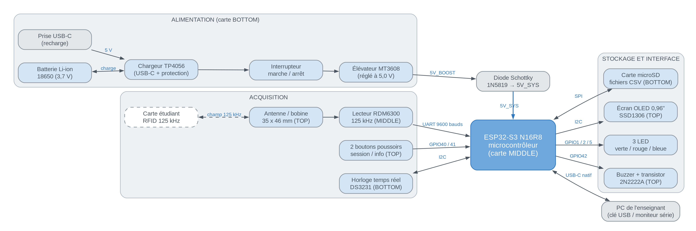
La bobine crée un champ à 125 kHz qui alimente la puce de la carte ; le lecteur RDM6300 envoie l'identifiant à l'ESP32-S3 par liaison série (9600 bauds). L'ESP32-S3 cherche l'étudiant dans la liste, lit l'heure sur le DS3231 (I2C) et écrit une ligne sur la microSD (SPI). L'énergie vient d'une batterie 18650 : chargeur TP4056, interrupteur, élévateur MT3608 réglé à 5 V puis diode Schottky.
| Cas | LED | Buzzer |
|---|---|---|
| Étudiant présent | verte | 1 bip court |
| Carte inconnue | rouge | 1 bip long |
| Carte déjà lue | rouge × 2 | 2 bips |
| Début / fin de séance | verte × 3 / rouge × 2 | 3 bips / 2 bips longs |
| Erreur (SD, horloge) | rouge × 3 | 3 bips |
| Système en marche | bleue, 2 éclats / 3 s | — |
| Composant | Rôle |
|---|---|
| ESP32-S3 N16R8 | Microcontrôleur (240 MHz, USB natif) |
| RDM6300 + bobine | Lecture des cartes 125 kHz (EM4100) |
| DS3231 + pile CR2032 | Horloge temps réel |
| Module microSD | Stockage des fichiers CSV |
| Écran OLED 0,96" | Affichage du nom et de l'état |
| 18650, TP4056, MT3608 | Batterie, charge USB-C, élévation à 5 V |
| 3 LED, buzzer, 2 boutons | Signalisation et commandes |
| Diode Schottky 1N5819 | Partage du 5 V entre USB et batterie |
| Nappes 16 fils (IDC) | Liaison entre les trois cartes |
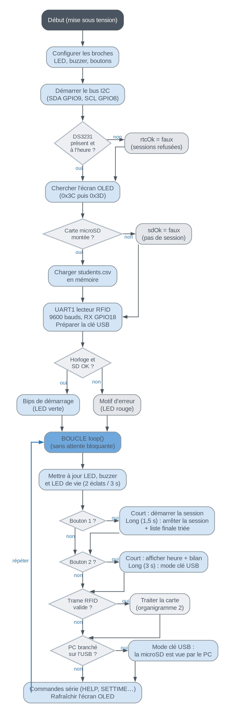
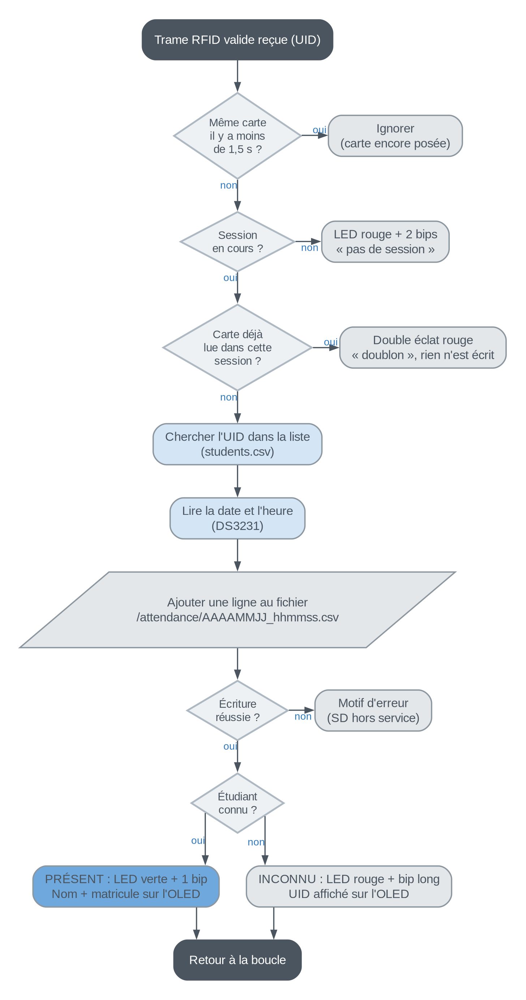
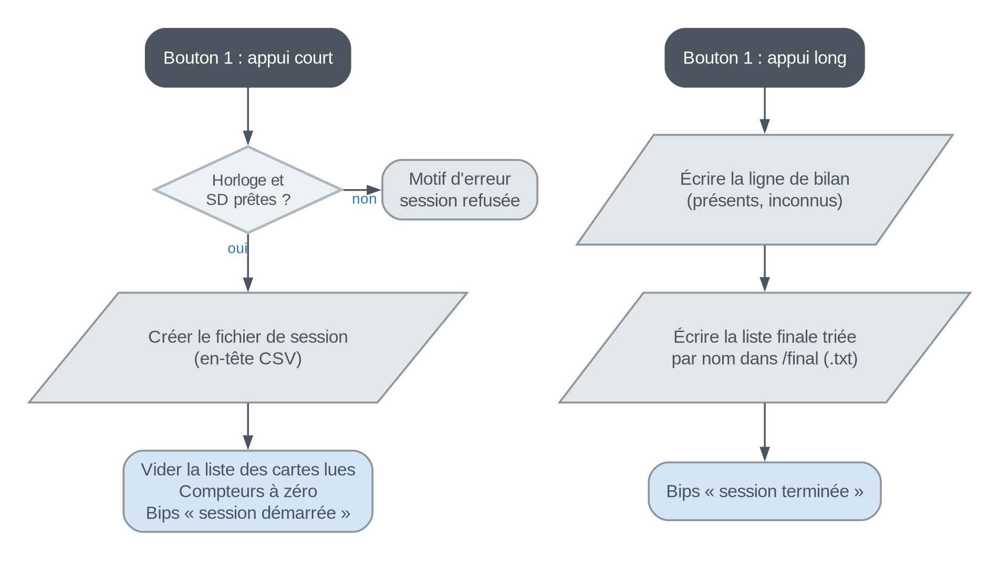
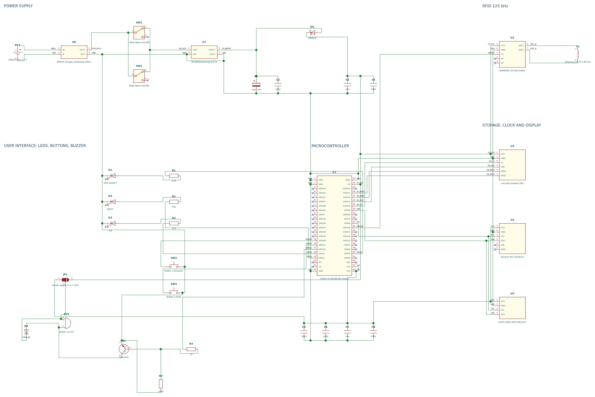
Schéma complet dessiné sous KiCad comme un seul circuit. Liaisons ESP32-S3 : LED sur GPIO 1, 2 et 5 ; buzzer sur GPIO 42 ; boutons sur GPIO 40 et 41 ; I2C (OLED, DS3231) sur GPIO 8 et 9 ; microSD sur GPIO 10 à 13 ; RDM6300 sur GPIO 18.
Pour que le boîtier tienne dans une main, le circuit est réparti sur trois cartes de 95 × 60 mm empilées, reliées par deux nappes de 16 fils. Les cartes sont dessinées sous KiCad, en double face.
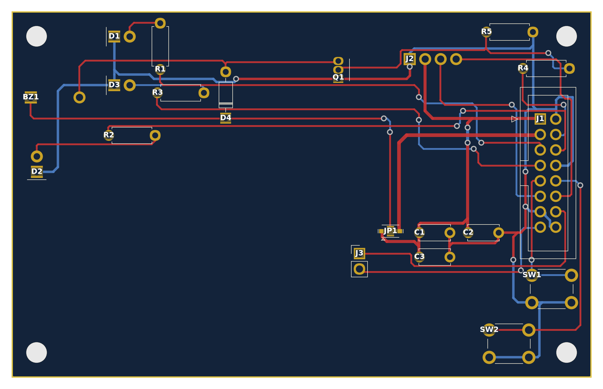
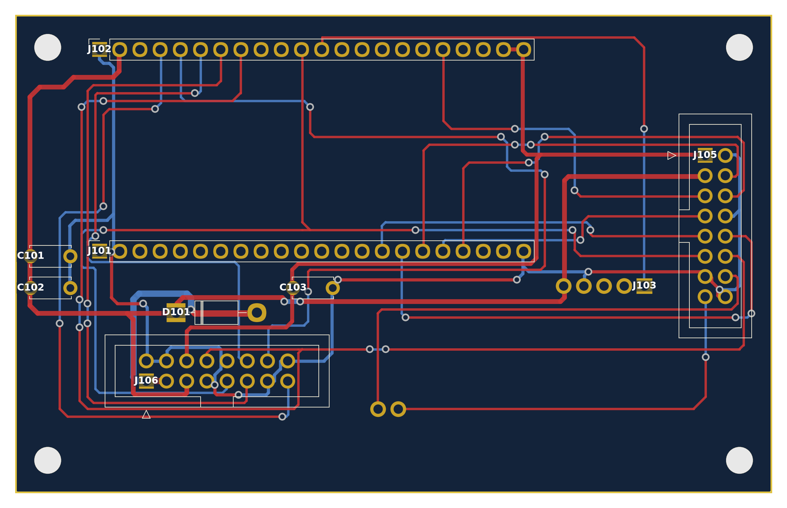
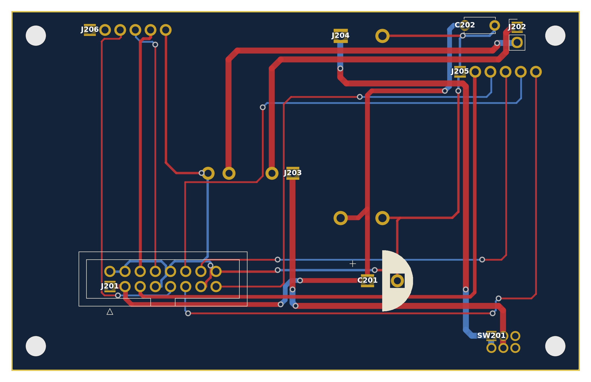
Alimentation : 18650 → TP4056 → interrupteur → MT3608 (5,0 V) → 1N5819 → 5V_SYS. Le 3,3 V vient du régulateur de la carte ESP32-S3. Attention, sur le TP4056 protégé la masse est OUT− et non B−.
Le montage a d'abord été câblé sur plaque d'essai et testé module par module avec de petits programmes (D1 à D8). La partie logique du programme a été vérifiée sur PC (26 tests unitaires). Les trois circuits imprimés ont ensuite été réalisés à partir des fichiers Gerber, assemblés puis validés par les essais ci-dessous.
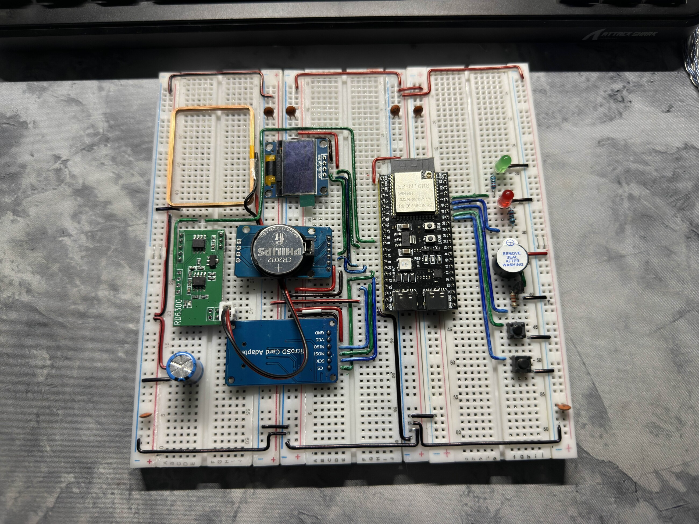
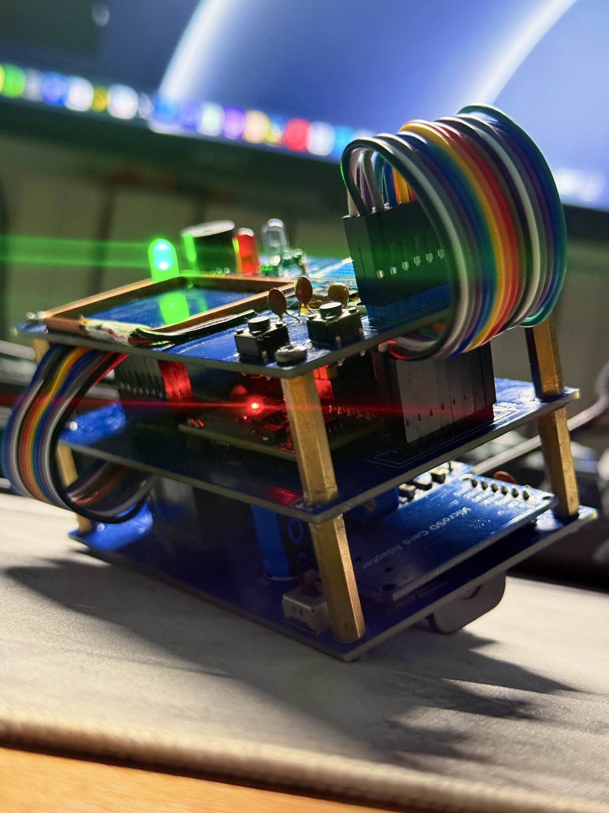
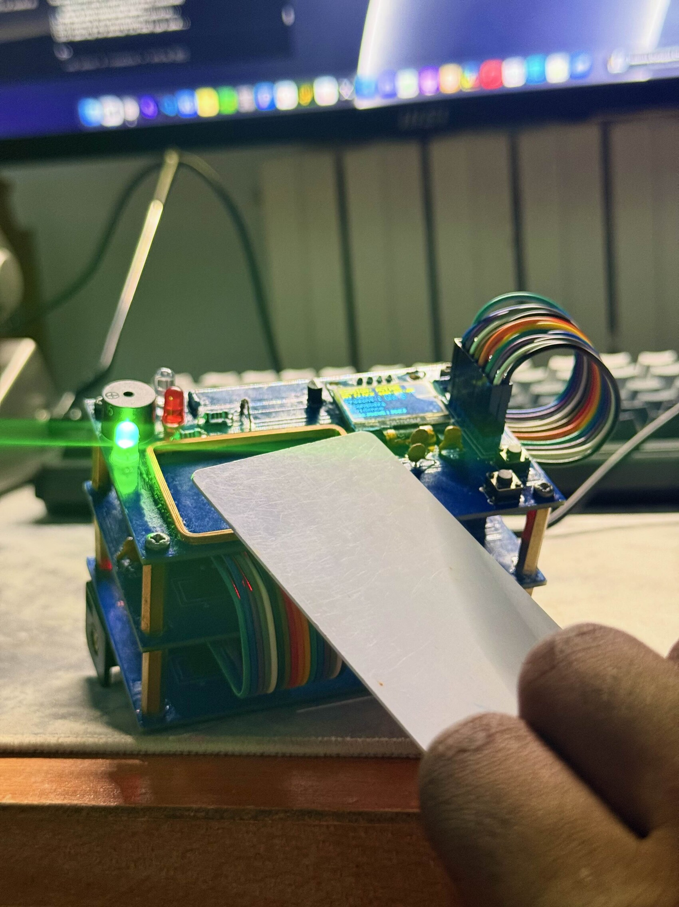
| Test | Résultat attendu | Résultat obtenu |
|---|---|---|
| Tensions à vide | 5,0 V / 4,7 V / 3,3 V | 4,98 / 4,86 / 3,26 V |
| Lecture d'une carte | UID lu, LED verte, bip | Conforme |
| Même carte deux fois | Comptée une seule fois | Conforme |
| Carte inconnue | « UNKNOWN », LED rouge | Conforme |
| Coupure pendant la séance | Fichier intact, heure gardée | Conforme |
| Branchement au PC | microSD vue comme clé USB | Conforme |
| Séance complète | Aucun passage manqué | Conforme |
| Autonomie | Au moins une journée de cours | Conforme |
| Distance de lecture | Carte posée à plat | ≈ 3 cm (mesuré) |
| Temps carte → bip | Moins de 1 s | 1 à 2 s (mesuré) |
| Courant batterie | — | ≈ 180 mA (estimé) |
La première difficulté a été de connaître la fréquence de la carte étudiant : deux téléphones NFC ne la détectaient pas alors qu'ils lisaient un passeport à 13,56 MHz. Nous en avons déduit qu'elle fonctionne à 125 kHz, ce que le lecteur RDM6300 a confirmé.
Ce projet nous a permis de passer par toutes les étapes d'un produit embarqué : cahier des charges, prototype, programme, schémas puis circuits imprimés. Nous avons utilisé les bus UART, I2C, SPI et USB et appris à gérer une batterie Li-ion.
Améliorations possibles : envoi des présences par Wi-Fi, boîtier imprimé en 3D avec niveau de batterie, lecteur 125 kHz et 13,56 MHz.